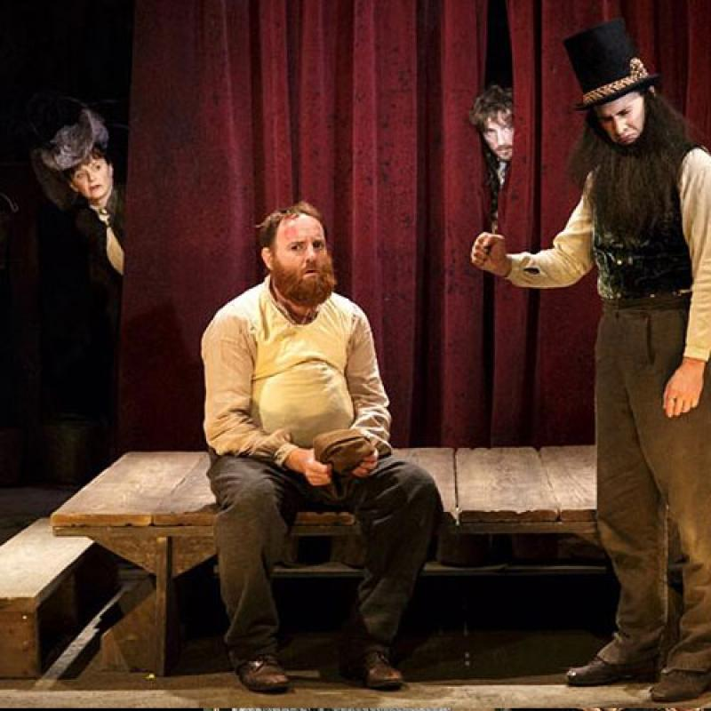

Représentation de la pièce

Une farce du XVIIe siècle
Le entre sur la scène par le côté jardins. Il avance songeux vers le centre de la scène. Il garde ces yeux vers le base. Il se place devant le public. Lentement, il relève tête et il regarde le public dans les yeux.
Le Barbouillé (au public) : Il faut avouer que je suis le plus malheureux de tous les hommes ! J’ai une femme qui me fait enrager.
Le se déplace vers le côté cours tout en regardant le public.
Le Barbouillé (au public) : Au lieu de me donner du soulagement et de faire les choses à mon souhait, elle me fait donner au diable vingt fois le jour.
Le se tourne vers le côté jardins et il continue à discourir.
Le Barbouillé (au public) : Au lieu de se tenir à la maison, elle aime la promenade, la bonne chère, et fréquente je ne sais quelle sorte de gens.
Arrivé au côté jardins, le se retourne vers le public.
Le Barbouillé (au public) : Ah ! pauvre , que tu es misérable ! Il faut pourtant la punir. Si tu la tuais... L’intention ne vaut rien, car tu serais pendu. Si tu la faisais mettre en prison… La carogne en sortirait avec son passe-partout. Que diable faire donc ?
Le se tourne vers le côté cours songeux. Le Docteur entre d'un pied ferme et décidé du côté cours. Sérieux et hautain, comme à son habitude, ce dernier se dirige sans ce soucier du vers l'autre côté de la scène.
Le Barbouillé (au public, réjouie) : Mais voilà monsieur le Docteur qui passe par ici, il faut que je lui demande un bon conseil sur ce que je dois faire.
Sans ce soucier des conventions, le interpelle le Docteur comme s'il était bon amis.
Le Barbouillé : Je m’en allais vous chercher pour vous faire une prière sur une chose qui m’est d’importance.
Le Docteur s'arrête brusquement. Il est mécontent de l'intervention de ce cher .
Le Docteur (mécontent) : Il faut que tu sois bien mal appris, bien lourdaud, et bien mal morigéné, mon ami, puisque tu m’abordes sans ôter ton chapeau, sans observer rationem loci, temporis et personae. Quoi ! Débuter d’abord par un discours mal digéré, au lieu de dire : salve, vel salvus sis, doctor, doctorum eruditissime. Hé ! Pour qui me prends-tu, mon ami ?
Ce texte est tiré du texte de Charles Louandre publié en 1910. Ce texte est disponible sur le site Wikisource.
L'exemple suivant est la page sur la Charte des droits de la personne.